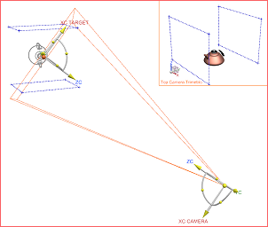
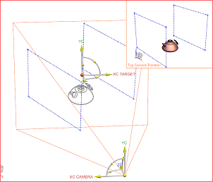

Define the first camera
-
In the Part Navigator, right-click Cameras and choose Create.
The Camera dialog box is displayed and the current view changes to the camera staging view.

-
Right-click in the view and choose Orient View→Isometric.

By default, the model is rendered in the staging view using the Static Wireframe rendering style.
As objects are displayed using only edge geometry, this reduces the time required to regenerate the model when you change the view.
The results view that shows what is seen by the camera, appears in the upper right corner of the graphics window.
-
In the Camera dialog box, make sure Type is set to Perspective.
-
In the Name group, change the Camera Name to front_upper_right.
-
In the Target group, clear the Lock Camera Position
 check box.
check box.
With an unlocked camera position, it can move based on the specified target.
-
Click Point Dialog
 .
.
-
In the Output Coordinates group, from the Reference list, select WCS.
This specifies the target orientation.
-
In the Point dialog box top banner, click Reset

This resets the output coordinates to the default WCS location of 0,0,0.
-
In the Point dialog box, click OK.